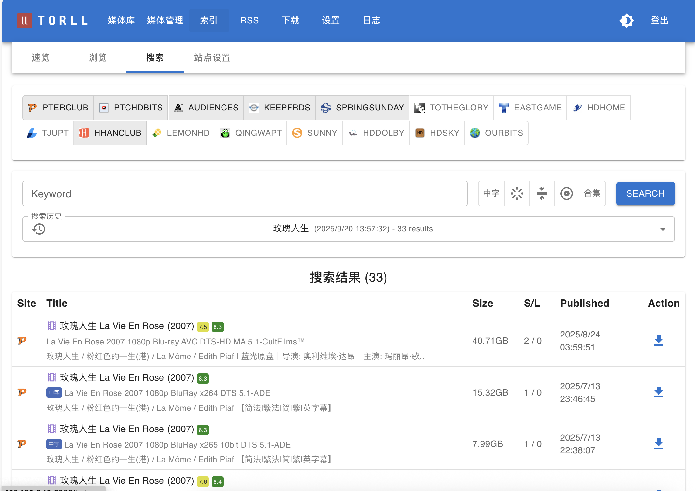

索引器
torll2 的索引器功能提供了多种方式来查找和发现站点内容，主要分为 浏览、搜索 和 速览 三种模式。你可以在 UI 的 “索引” 部分找到它们。


1. 浏览 (Browse)
“浏览” 功能允许你直接访问并翻阅某个特定站点的种子列表，就像你在该站点的官网上操作一样。
- 入口: 在 索引 -> 站点设置 页面，每个站点条目后面通常会有一个“浏览”或类似的按钮。
- 工作方式: 点击后，
torll2会向该站点的服务器发起请求，获取种子列表的第一页内容并展示出来。你还可以进行翻页操作。 - 高级用法: 如果站点的浏览页面支持通过 URL 参数进行过滤（例如，筛选特定分类），你可以在调用此功能时传入相应的参数，实现更精确的浏览。
适用场景: 当你想查看某个特定站点的最新种子，或者想在站点的特定分类下寻找资源时，此功能非常有用。
2. 搜索 (Search)
“搜索” 是一个强大的全局功能，它允许你同时在多个已配置的站点中查找同一个关键词。
- 入口: 在 索引 -> 搜索 页面。
- 工作方式:
- 输入你要查找的 关键词。
- （可选）选择你希望在哪几个 站点 或哪几个 标签 范围内进行搜索。如果留空，则默认在所有“启用搜索”的站点中进行。
- 点击“搜索”后，
torll2会并发地向所有目标站点发送搜索请求。 - 结果会实时返回并展示在页面上。
- 搜索历史: 系统会自动保存你的每一次搜索记录（关键词和时间戳）。你可以通过 “搜索历史” 查看，并点击任意一条记录来快速查看当时的结果，而无需重新搜索。
适用场景: 当你有一个明确的目标（如某部电影或剧集），并希望快速在所有可用站点中找到它时，这是最高效的方式。
3. 速览 (Quick View)
“速览” 功能是系统定时刷新站点首页，解析出来的站上最新种子，缓存在本地数据库中 便于方便地浏览。
- 入口: 在 索引 -> 速览 页面。
- 强大过滤: 这是“速览”功能最大的特点。你可以使用多种条件对本地缓存的种子进行组合过滤，例如：
- 站点
- 标题关键词
- 种子大小 (GB)
- IMDB/豆瓣评分
适用场景: 当你想对已经收集到的资源进行分析、筛选和管理时，例如“查找所有站点中，大于 50GB 且 IMDB 评分高于 8.0 的所有 4K 电影”，速览是实现这一需求的最佳工具。